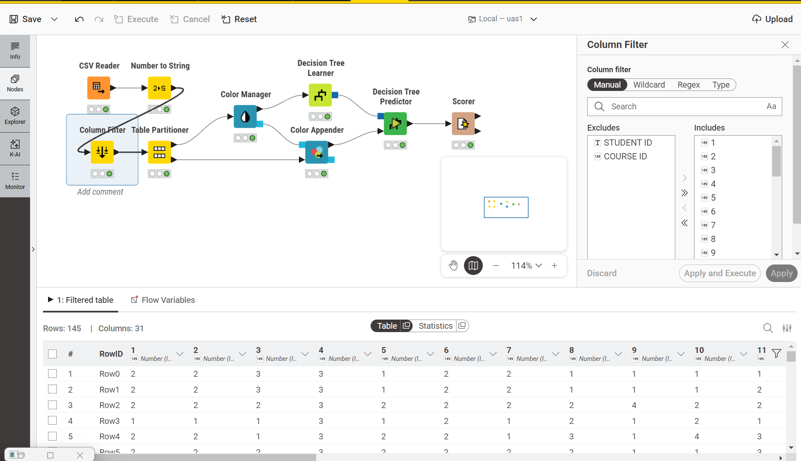
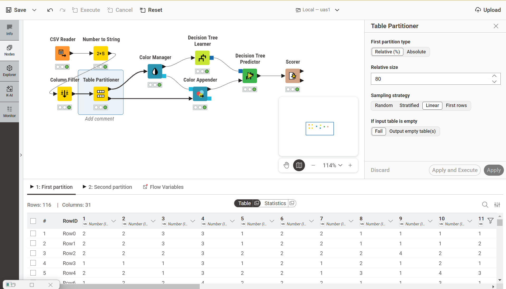
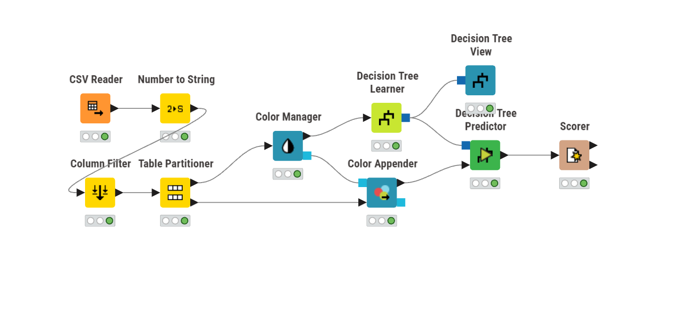
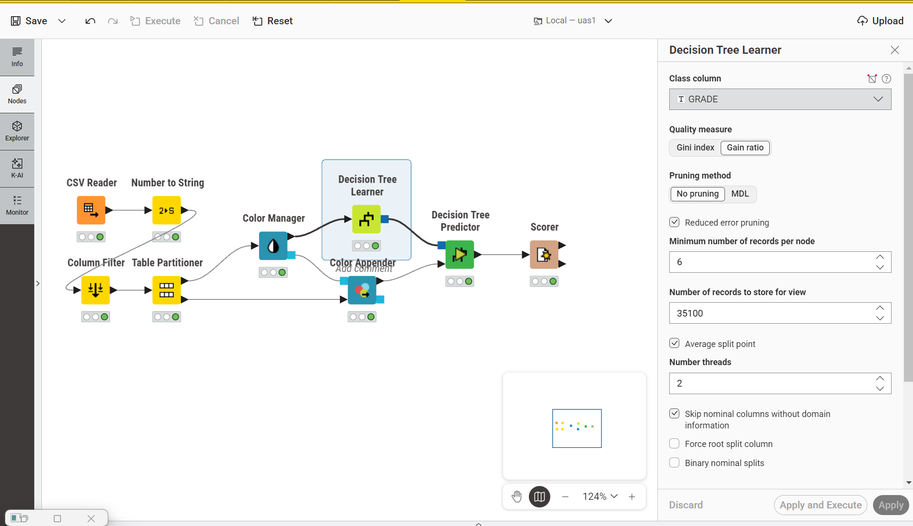
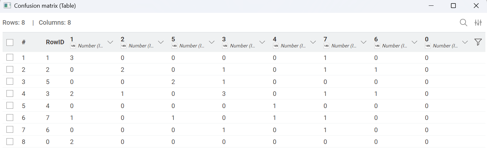
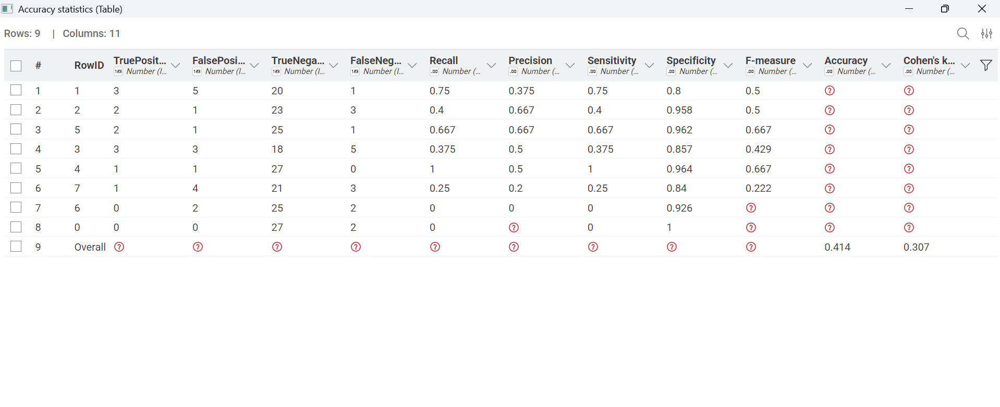
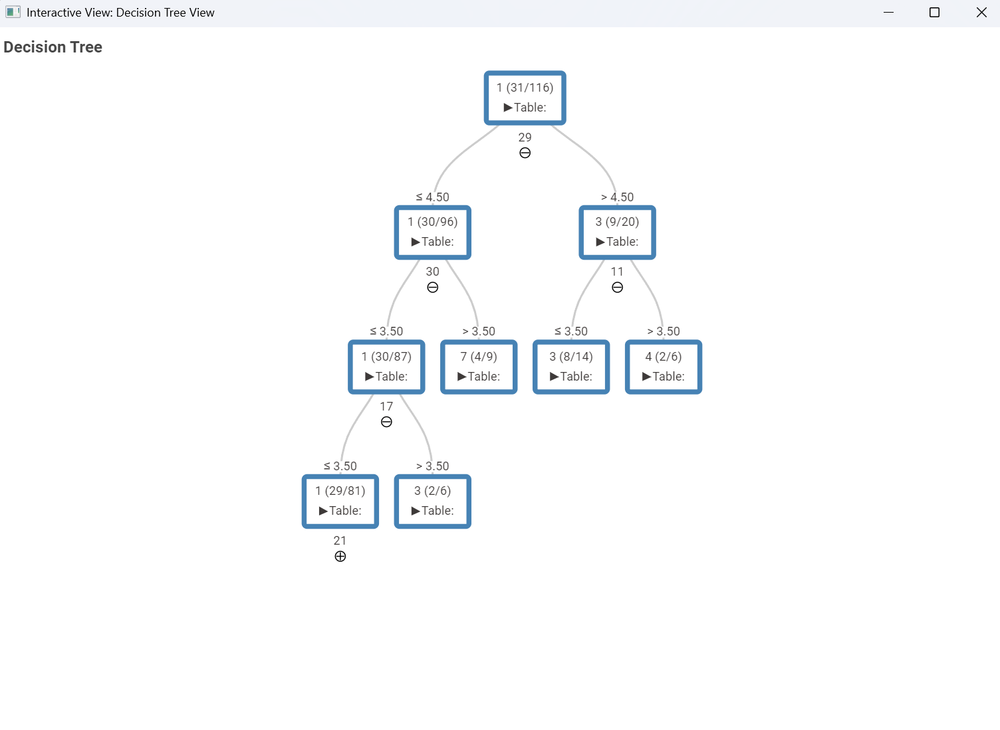

UAS Data Mining: Prediksi Performa Akademik Mahasiswa Menggunakan Decision Tree#
Nama Mahasiswa: Alif Baiatur Ridhwan El Habibie NIM: 240411100156 Mata Kuliah: Penambangan Data Program Studi: Teknik Informatika Universitas: Universitas Trunojoyo Madura
Pendahuluan#
Evaluasi terhadap performa akademik mahasiswa merupakan salah satu aspek penting dalam dunia pendidikan tinggi karena berkaitan langsung dengan kualitas pembelajaran dan keberhasilan studi mahasiswa. Nilai akademik yang diperoleh mahasiswa sering kali digunakan sebagai indikator utama untuk menilai tingkat pemahaman materi, konsistensi belajar, serta kemampuan beradaptasi terhadap proses perkuliahan. Namun, penurunan performa akademik sering kali tidak terjadi secara tiba-tiba, melainkan merupakan hasil akumulasi dari berbagai faktor yang berkembang secara bertahap selama masa studi. Kondisi ini membuat identifikasi dini terhadap mahasiswa yang berpotensi mengalami penurunan performa menjadi hal yang penting bagi institusi pendidikan.
Seiring berkembangnya teknologi informasi, institusi pendidikan saat ini menyimpan data dalam jumlah yang semakin besar, baik berupa data akademik maupun data non-akademik mahasiswa. Data tersebut mencakup berbagai informasi seperti latar belakang keluarga, kebiasaan belajar, tingkat kehadiran, hingga riwayat performa akademik sebelumnya. Sayangnya, kumpulan data tersebut sering kali hanya berfungsi sebagai arsip dan belum dimanfaatkan secara optimal untuk menghasilkan informasi yang bernilai. Dalam konteks ini, data mining, khususnya Educational Data Mining (EDM), hadir sebagai pendekatan yang mampu mengekstraksi pola, hubungan, dan pengetahuan tersembunyi dari data pendidikan sehingga dapat digunakan untuk mendukung proses analisis dan pengambilan keputusan secara lebih efektif.
Memahami faktor-faktor yang memengaruhi prestasi akademik mahasiswa menjadi langkah penting dalam upaya meningkatkan kualitas pendidikan. Performa akademik tidak hanya dipengaruhi oleh kemampuan intelektual, tetapi juga oleh berbagai faktor lain seperti kondisi keluarga, latar belakang pendidikan orang tua, kedisiplinan mengikuti perkuliahan, kebiasaan belajar, serta target akademik pribadi. Dengan memanfaatkan pendekatan machine learning, pola-pola hubungan antar faktor tersebut dapat dipelajari untuk membangun model prediksi performa akademik secara lebih objektif. Pada penelitian ini, algoritma Decision Tree digunakan untuk menganalisis dan memprediksi performa akademik mahasiswa berdasarkan dataset Higher Education Students Performance Evaluation. Metode ini dipilih karena memiliki kemampuan klasifikasi yang baik serta menghasilkan struktur keputusan yang mudah dipahami dan diinterpretasikan, sehingga faktor-faktor yang paling berpengaruh terhadap perolehan nilai mahasiswa dapat diidentifikasi secara lebih jelas.
Business Understanding#
Permasalahan yang Ingin Diselesaikan: Bagaimana memprediksi performa akademik mahasiswa (kategori nilai/grade akhir) berdasarkan faktor pribadi, kondisi keluarga, dan kebiasaan belajar mereka sehari-hari menggunakan pendekatan Decision Tree?
Tujuan Penelitian:
Mengetahui karakteristik mahasiswa berdasarkan dataset demografi dan kebiasaan belajar.
Mengidentifikasi faktor-faktor yang paling dominan dalam memengaruhi perolehan nilai mahasiswa.
Membangun model klasifikasi menggunakan algoritma Decision Tree dengan quality measure Gain Ratio untuk memprediksi nilai akhir mahasiswa.
Mengevaluasi performa model Decision Tree yang telah dibangun guna mengetahui tingkat akurasi dan keandalannya dalam mengklasifikasikan grade mahasiswa.
Manfaat Penelitian:
Bagi Mahasiswa: Membantu mereka menyadari kebiasaan atau faktor apa saja yang dapat berdampak positif maupun negatif terhadap nilai mereka, sehingga dapat memperbaiki pola belajar ke depannya.
Bagi Institusi Pendidikan (Dosen & Universitas): Memberikan wawasan berbasis data untuk mendeteksi lebih awal mahasiswa yang berpotensi memperoleh nilai rendah, sehingga bimbingan atau konseling akademik dapat diberikan secara lebih cepat dan tepat sasaran.
Data Understanding#
Sumber Dataset: Data yang digunakan dalam analisis ini adalah “Higher Education Students Performance Evaluation Dataset” yang diperoleh dari UCI Machine Learning Repository (tautan dataset).
Informasi Dataset:
Jumlah data: 145 mahasiswa (baris data)
Jumlah atribut: 30 atribut input (prediktor, bernomor 1–30), 2 atribut identitas (
STUDENT IDdanCOURSE ID), dan 1 atribut target (OUTPUT Grade)Target:
OUTPUT Grade(atribut yang ingin diprediksi)Tipe data: Kategorikal yang telah di-encode menjadi Integer, serta Integer biasa
Missing value: Tidak ditemukan missing value pada dataset (berdasarkan pemeriksaan table view di KNIME)
Pengelompokan Atribut:
Dataset ini mencakup berbagai variabel yang dapat dikelompokkan menjadi:
Data Pribadi
Umur
Jenis kelamin
Jenis sekolah asal
Beasiswa
Pekerjaan sampingan
Data Keluarga
Pendidikan ayah
Pendidikan ibu
Pekerjaan orang tua
Status orang tua
Kebiasaan Belajar
Jam belajar mingguan (Weekly Study Hours)
Kehadiran kuliah (Attendance to Classes)
Frekuensi membaca (Reading Frequency, untuk literatur non-ilmiah maupun ilmiah)
Pencatatan materi (Taking Notes di kelas)
Diskusi kelas
Target
OUTPUT Grade merupakan nilai akhir yang merepresentasikan performa mahasiswa. Berikut tabel kategori nilai (dalam format kelas/indeks yang dikategorikan sebagai angka di dataset):
Kategori Angka |
Interpretasi Huruf |
|---|---|
0 |
Fail |
1 |
DD |
2 |
DC |
3 |
CC |
4 |
CB |
5 |
BB |
6 |
BA |
7 |
AA |
Data Preparation#
Tahapan persiapan data dilakukan pada KNIME Analytics Platform untuk memastikan dataset siap digunakan pada proses pemodelan.
Import Dataset#
Proses import dataset dilakukan menggunakan node CSV Reader, yang membaca file dataset mentah ke dalam table format yang terstruktur, menghasilkan 145 baris dan 33 kolom sesuai dengan struktur dataset asli.
Konversi Tipe Data Target#
Node Number to String digunakan untuk mengubah tipe data kolom target (GRADE) dari Integer menjadi String. Hal ini penting agar algoritma Decision Tree memperlakukan nilai 0–7 sebagai label kelas/kategori, bukan sebagai nilai numerik yang bersifat kontinu untuk regresi.
Column Filter (Seleksi Atribut)#
Node Column Filter digunakan untuk mengeluarkan (exclude) dua atribut yang tidak relevan sebagai fitur prediktor, yaitu:
STUDENT ID— bersifat unik per baris sehingga tidak memiliki nilai prediktifCOURSE ID— bersifat identifier, bukan karakteristik mahasiswa yang memengaruhi nilai
Setelah proses filtering, dataset yang tersisa memiliki 145 baris dan 31 kolom, seluruhnya berupa atribut prediktor numerik ditambah kolom target.

Pembagian Data (Table Partitioner)#
Node Table Partitioner digunakan untuk membagi dataset menjadi data latih dan data uji dengan konfigurasi:
First partition type: Relative (%)
Relative size: 80
Sampling strategy: Linear
Dengan konfigurasi tersebut, dataset terbagi menjadi:
Data Latih (Training Set): 116 baris (80% dari 145 data), digunakan untuk melatih model Decision Tree
Data Uji (Test Set): 29 baris (20% dari 145 data), digunakan untuk menguji performa model
Perlu dicatat bahwa strategi sampling yang digunakan adalah Linear, bukan Random, sehingga pembagian data dilakukan secara berurutan berdasarkan posisi baris, bukan secara acak.

Catatan Normalisasi#
Pada workflow ini, tidak dilakukan tahapan normalisasi data menggunakan node Normalizer, karena seluruh atribut prediktor telah berupa data encoded numerical dengan rentang skala kategori yang relatif kecil dan seragam antar kolom.
Modeling#
Metode yang Digunakan#
Metode penambangan data yang digunakan pada penelitian ini adalah Decision Tree Classification.
Konsep Decision Tree: Decision Tree (Pohon Keputusan) merupakan teknik klasifikasi yang bekerja secara hierarkis, dengan konsep inti sebagai berikut:
Root Node (Simpul Akar): Atribut yang paling signifikan dan berada di puncak pohon, digunakan sebagai pembelahan pertama pada seluruh dataset.
Internal Node (Simpul Internal): Pertanyaan bersyarat atau pengujian atribut lanjutan di bawah Root Node.
Leaf Node (Simpul Daun): Hasil keputusan akhir atau kelas target prediksi, yaitu
OUTPUT Grade.
Alasan Pemilihan Decision Tree:
Mudah Dipahami: Model menghasilkan output berupa aturan (if-then rules) yang transparan dan menyerupai alur penalaran manusia.
Mudah Diinterpretasikan: Bentuk visual pohon memudahkan pembacaan kondisi-kondisi yang menentukan kategori nilai mahasiswa.
Dapat Mengidentifikasi Faktor Penting: Decision Tree secara bawaan melakukan seleksi fitur, menempatkan atribut yang paling berpengaruh pada hirarki teratas pohon.
Workflow KNIME#
Proses training dan testing dibentuk melalui rangkaian node berikut:
CSV Reader: Membaca dan mengimpor file dataset mentah berformat
.csvke dalam KNIME.Number to String: Mengubah tipe data kolom target (
GRADE) dari Integer menjadi String, agar algoritma memperlakukan nilai 0–7 sebagai label kategori, bukan nilai numerik untuk regresi.Column Filter: Mengeluarkan atribut
STUDENT IDdanCOURSE IDyang tidak relevan sebagai fitur prediktor.Table Partitioner: Membagi dataset (145 baris) menjadi Data Latih (80% = 116 data) dan Data Uji (20% = 29 data) menggunakan strategi Linear.
Color Manager & Color Appender: Memberikan penanda warna pada kategori
GRADEuntuk mempermudah visualisasi data pada node-node berikutnya.Decision Tree Learner: Menerima Data Latih (116 data) dan mempelajari pola untuk membentuk model Decision Tree.
Decision Tree Predictor: Menerapkan model yang telah dilatih pada Data Uji (29 data) untuk memprediksi
GRADEmasing-masing mahasiswa.Scorer: Membandingkan hasil prediksi dengan label asli, kemudian menghitung akurasi model.

Konfigurasi Decision Tree Learner#
Berikut adalah parameter konfigurasi yang digunakan pada node Decision Tree Learner:
Parameter |
Nilai/Pengaturan |
|---|---|
Class column |
GRADE |
Quality measure |
Gain Ratio |
Pruning method |
No pruning |
Reduced error pruning |
Aktif (dicentang) |
Minimum number of records per node |
6 |
Number of records to store for view |
35100 |
Average split point |
Aktif (dicentang) |
Number threads |
2 |
Skip nominal columns without domain information |
Aktif (dicentang) |
Force root split column |
Tidak aktif |
Binary nominal splits |
Tidak aktif |
No true child strategy (PMML Settings) |
Return null prediction |
Missing value strategy (PMML Settings) |
Last prediction |

Pemilihan Gain Ratio sebagai quality measure bertujuan untuk mengatasi kecenderungan bias pada metode Information Gain biasa, yang cenderung memprioritaskan atribut dengan jumlah kategori/nilai unik yang lebih banyak. Gain Ratio menormalisasi nilai gain terhadap jumlah dan ukuran cabang yang dihasilkan, sehingga pemilihan atribut pembagi menjadi lebih adil dan seimbang.
Evaluation#
Penggunaan node Scorer pada KNIME ditujukan untuk mengukur dan memvalidasi tingkat keakuratan model klasifikasi Decision Tree yang telah dilatih, dengan membandingkan hasil prediksi (Prediction (GRADE)) terhadap label kelas asli (GRADE) pada Data Uji.
Accuracy#
Definisi: Accuracy (Akurasi) adalah ukuran kedekatan hasil prediksi model terhadap label atau nilai aslinya secara keseluruhan pada semua kelas kategori.
Rumus Accuracy:
Confusion Matrix#
Evaluasi lebih detail untuk tiap kategori (Fail, DD, DC, dst.) dilakukan melalui matriks konfusi (confusion matrix), dengan elemen sebagai berikut (jika berfokus pada salah satu kelas target):
True Positive (TP): Prediksi menyatakan mahasiswa berada di Grade X, dan kenyataannya juga di Grade X.
True Negative (TN): Prediksi menyatakan bukan Grade X, dan kenyataannya juga bukan Grade X.
False Positive (FP): Prediksi menyatakan Grade X, namun kenyataannya bukan Grade X.
False Negative (FN): Prediksi menyatakan bukan Grade X, namun kenyataannya adalah Grade X.

Hasil Evaluasi Model#
Berdasarkan output node Scorer, model Decision Tree yang dibangun menghasilkan performa sebagai berikut:
Metrik |
Nilai |
|---|---|
Total Data Uji |
29 |
Total Prediksi Benar |
12 |
Overall Accuracy |
0.414 (41.4%) |
Cohen’s Kappa |
0.307 |

Interpretasi Overall Accuracy
Perhitungan akurasi keseluruhan diperoleh dari total prediksi yang benar, yaitu jumlah nilai diagonal pada confusion matrix, kemudian dibagi dengan total data uji.
Nilai tersebut menunjukkan bahwa dari 29 data uji, model berhasil memprediksi dengan benar sebanyak 12 data.
Sebagai perbandingan, karena dataset ini memiliki 8 kelas target, yaitu Grade 0 hingga Grade 7, maka apabila prediksi dilakukan secara acak tanpa menggunakan model klasifikasi, baseline accuracy yang diharapkan hanya sebesar:
Dengan demikian, accuracy sebesar 41,4% menunjukkan bahwa performa model berada lebih dari tiga kali lipat dibandingkan prediksi acak. Hal ini mengindikasikan bahwa model Decision Tree tidak hanya melakukan klasifikasi secara kebetulan, tetapi mampu mempelajari pola tertentu dari data akademik mahasiswa, meskipun performanya masih dapat ditingkatkan.
Interpretasi Hasil:
Perhitungan Overall Accuracy. Akurasi keseluruhan diperoleh dari total prediksi yang benar (jumlah nilai diagonal pada confusion matrix) dibagi total data uji:
\[Accuracy = \frac{12}{29} = 0{,}414 \ (41{,}4\%)\]Angka ini menunjukkan bahwa dari 29 data uji, model hanya berhasil menebak tepat sebanyak 12 data. Akurasi yang tergolong rendah ini wajar terjadi mengingat target klasifikasi bersifat multi-class dengan 8 kategori nilai (Fail hingga AA), di mana pola kebiasaan mahasiswa pada kategori nilai yang berdekatan (misalnya CC dan CB) cenderung tumpang tindih, sehingga model kesulitan membedakannya secara tegas.
Cohen’s Kappa (0,307). Nilai Cohen’s Kappa sebesar 0,307 berada pada rentang “Fair Agreement” (kesesuaian wajar) menurut skala interpretasi Landis & Koch. Hal ini menunjukkan bahwa meskipun akurasi model tergolong rendah, prediksi yang dihasilkan bukan sekadar tebakan acak (random guess), melainkan tetap mengikuti pola aturan (rules) yang terbentuk dari struktur Decision Tree.
Variasi performa antar kelas. Berdasarkan tabel Accuracy Statistics per kelas, terlihat bahwa performa model tidak merata di seluruh kategori nilai. Beberapa kelas seperti Grade 4 memiliki Recall dan Precision yang cukup baik (masing-masing 1,0 dan 0,5), sedangkan kelas lain seperti Grade 6 dan Grade 0 memiliki Recall 0 — menandakan model sama sekali tidak berhasil mengenali data uji pada kategori tersebut. Hal ini kemungkinan disebabkan oleh jumlah data pada kelas-kelas tersebut yang relatif sedikit dalam Data Latih, sehingga model kurang memiliki cukup pola untuk mempelajarinya secara memadai.
Analisis Faktor yang Mempengaruhi Nilai Mahasiswa#
Berdasarkan rule set aktual yang dihasilkan oleh model Decision Tree (dilihat melalui Decision Tree View dengan Initial expanded levels = 3), berikut adalah struktur pemisahan (split) yang benar-benar terbentuk pada beberapa level teratas pohon:

Urutan Atribut Pemisah (Splitter) pada Level Teratas#
Level |
Node Induk |
Atribut Pemisah |
Nama Atribut |
Titik Pemisah (Threshold) |
|---|---|---|---|---|
Root |
— |
Kolom 29 |
Cumulative GPA semester lalu |
≤ 4,50 vs > 4,50 |
2 (cabang kiri) |
Root ≤ 4,50 |
Kolom 30 |
Expected Cumulative GPA saat lulus |
≤ 3,50 vs > 3,50 |
2 (cabang kanan) |
Root > 4,50 |
Kolom 11 |
Pendidikan Ibu |
≤ 3,50 vs > 3,50 |
3 (cabang kiri-kiri) |
Node 30 ≤ 3,50 |
Kolom 17 |
Jam belajar mingguan |
≤ 3,50 vs > 3,50 |
4 (cabang kiri-kiri-kiri) |
Node 17 ≤ 3,50 |
Kolom 21 |
Pengaruh proyek/kegiatan terhadap keberhasilan |
(belum di-expand lebih lanjut) |
Interpretasi#
1. Cumulative GPA Semester Lalu sebagai Root Node
Atribut yang menjadi pemisah pertama dan paling dominan pada model ini adalah Cumulative GPA semester sebelumnya, bukan atribut kebiasaan belajar harian seperti kehadiran atau frekuensi membaca. Hal ini cukup masuk akal secara akademis, karena performa akademik mahasiswa umumnya bersifat konsisten dari semester ke semester — mahasiswa dengan riwayat IPK rendah cenderung melanjutkan pola nilai yang rendah pula pada semester berikutnya, dan sebaliknya. Root node ini secara efektif membagi mahasiswa menjadi dua kelompok besar: mereka dengan riwayat GPA rendah-menengah (≤ 4,50) sebanyak 96 dari 116 data latih, dan kelompok dengan riwayat GPA lebih tinggi (> 4,50) sebanyak 20 data.
Kesimpulan#
Penerapan Data Mining Efektif: Data mining, khususnya algoritma machine learning, dapat digunakan untuk merancang prediksi mengenai performa akademik mahasiswa berdasarkan histori data pribadi, keluarga, dan akademik mereka.
Keandalan Decision Tree pada Kasus Multi-Kelas: Model Decision Tree dengan quality measure Gain Ratio berhasil dibangun untuk mengklasifikasikan
OUTPUT Gradeyang terdiri dari 8 kategori nilai. Namun, model ini hanya mencapai akurasi sebesar 41,4% dengan Cohen’s Kappa 0,307 (“Fair Agreement”), yang menunjukkan bahwa performa klasifikasi masih tergolong rendah, terutama disebabkan oleh kompleksitas target 8 kelas serta jumlah data yang relatif terbatas (145 baris).Cumulative GPA sebagai Prediktor Utama: Berbeda dengan asumsi umum bahwa kehadiran atau kebiasaan belajar harian menjadi faktor paling dominan, hasil rule set model justru menunjukkan bahwa Cumulative GPA semester sebelumnya merupakan atribut yang paling berpengaruh sebagai root node. Hal ini mengindikasikan bahwa riwayat akademik mahasiswa merupakan indikator terkuat untuk memprediksi performa mereka selanjutnya.
Peran Faktor Keluarga dan Kebiasaan Belajar sebagai Faktor Sekunder: Faktor seperti ekspektasi GPA pribadi, tingkat pendidikan ibu, dan jam belajar mingguan muncul sebagai pemisah pada level-level berikutnya dalam pohon keputusan, menunjukkan bahwa faktor-faktor tersebut tetap berkontribusi meskipun tidak sedominan riwayat akademik.
Potensi sebagai Alat Peringatan Dini: Meskipun akurasi model belum optimal, pola-pola yang teridentifikasi dari struktur pohon keputusan tetap dapat dimanfaatkan sebagai dasar awal bagi dosen maupun institusi untuk mengenali mahasiswa yang berisiko mengalami penurunan performa akademik, khususnya mereka yang memiliki riwayat GPA rendah.
Saran#
Bagi Mahasiswa: Mahasiswa disarankan untuk memperhatikan konsistensi performa akademiknya dari semester ke semester, mengingat riwayat Cumulative GPA terbukti menjadi faktor paling berpengaruh terhadap nilai yang akan diperoleh berikutnya. Selain itu, penetapan ekspektasi GPA pribadi yang realistis serta peningkatan jam belajar mandiri tetap perlu dijaga sebagai faktor pendukung, khususnya bagi mahasiswa dengan riwayat akademik yang belum stabil.
Bagi Dosen/Institusi: Dosen dan pihak akademik disarankan untuk memanfaatkan data riwayat akademik mahasiswa (seperti IPK semester sebelumnya) sebagai indikator awal dalam mengidentifikasi mahasiswa yang berisiko mengalami penurunan performa, sehingga bimbingan akademik dapat diberikan secara lebih tepat sasaran sejak awal semester.
Bagi Peneliti Selanjutnya: Mengingat akurasi model pada penelitian ini masih tergolong rendah (41,4%), penelitian berikutnya disarankan untuk mencoba metode klasifikasi lain (misalnya Naive Bayes atau Random Forest) sebagai pembanding, menerapkan teknik pruning pada Decision Tree untuk mengurangi kompleksitas pohon, serta mempertimbangkan penambahan jumlah data agar model memiliki generalisasi yang lebih baik, khususnya pada kelas-kelas nilai dengan jumlah data yang minim.
Daftar Pustaka#
Yilmaz, N., & Şekeroğlu, B. (2019). Higher Education Students Performance Evaluation [Dataset]. UCI Machine Learning Repository. https://doi.org/10.24432/C51G82
Quinlan, J. R. (1986). Induction of Decision Trees. Machine Learning, 1(1), 81–106.
Han, J., Kamber, M., & Pei, J. (2011). Data Mining: Concepts and Techniques (3rd ed.). Morgan Kaufmann.
KNIME AG. (n.d.). Decision Tree Learner Node Documentation. KNIME Analytics Platform. https://hub.knime.com